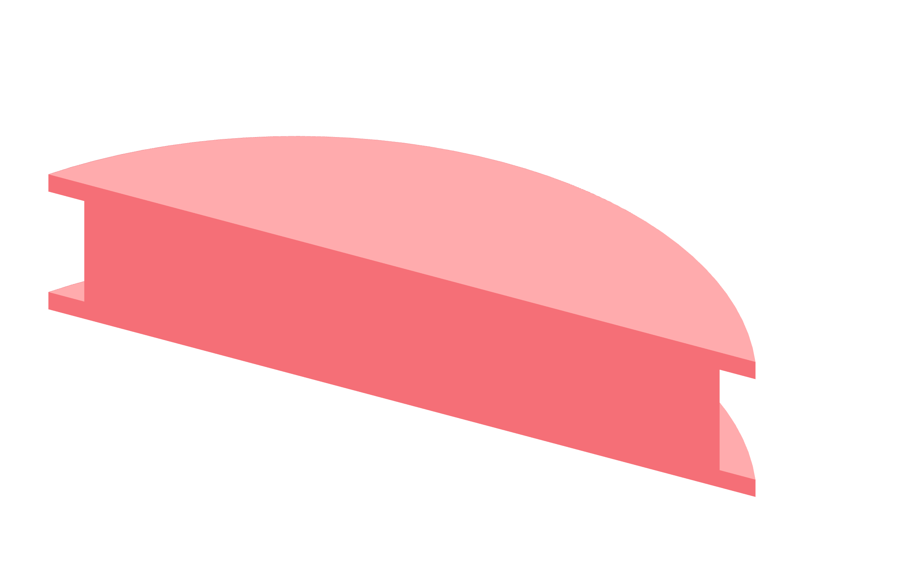

Preparation / print26 / 179
Start with the pulley sector
One short print checks whether the purchased 6 mm GT2 belt seats in the printed tooth geometry before six pulleys occupy the printer.
Add1 pulley-sector-coupon · purchased 6 mm GT2 belt
Tools / setupAbrasive-resistant 0.4 mm nozzle · 0.2 mm first / 0.24 mm normal layer · caliper

- Slice the coupon flat in PET-GF with the same profile used for the pulleys.
- Let it cool flat, then clear loose strands without filing the tooth flanks.
- Wrap the belt onto the sector and seat adjacent teeth with light finger pressure.
- Check that the belt sits at one consistent depth and lifts away without catching.
Ready when
Adjacent teeth seat together without forcing, gaps or a raised belt section. A belt that bridges or rocks indicates a profile/print-fit error. Correct that interface and repeat the coupon before printing the pulleys.